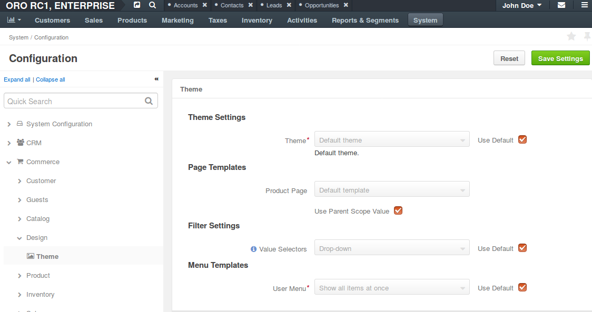
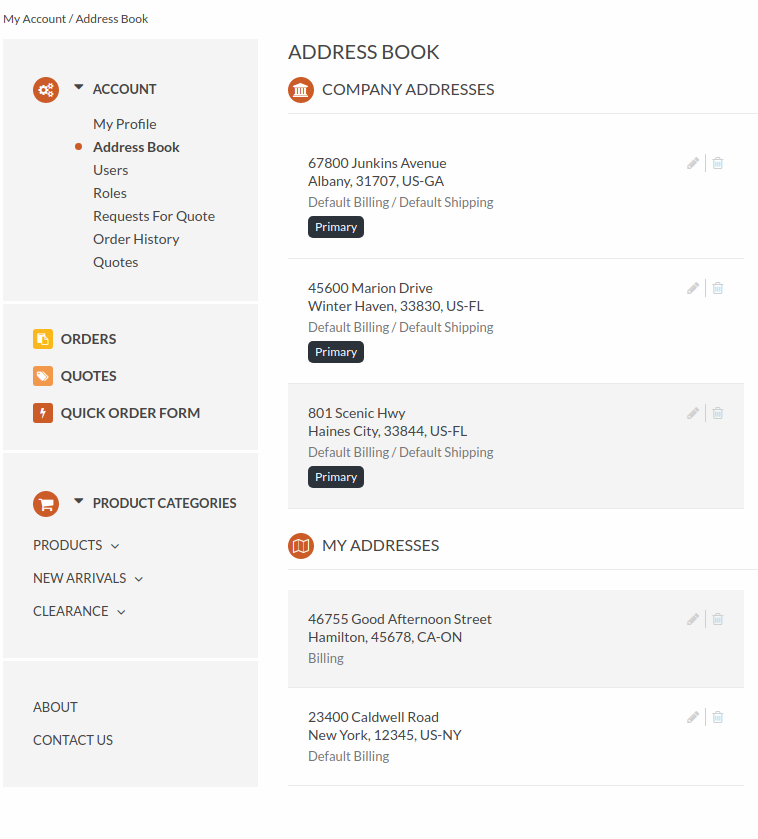
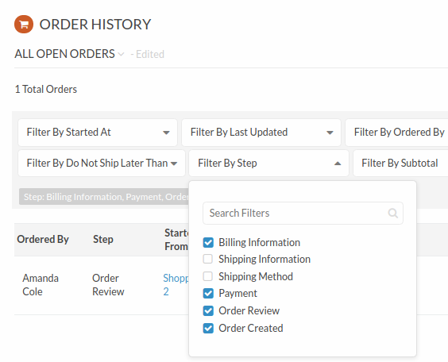
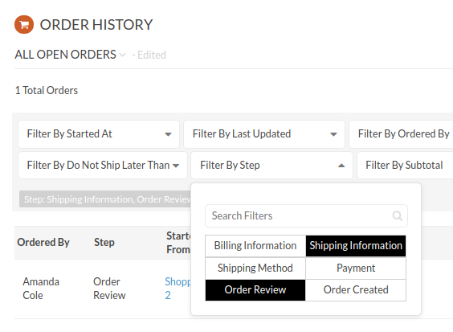
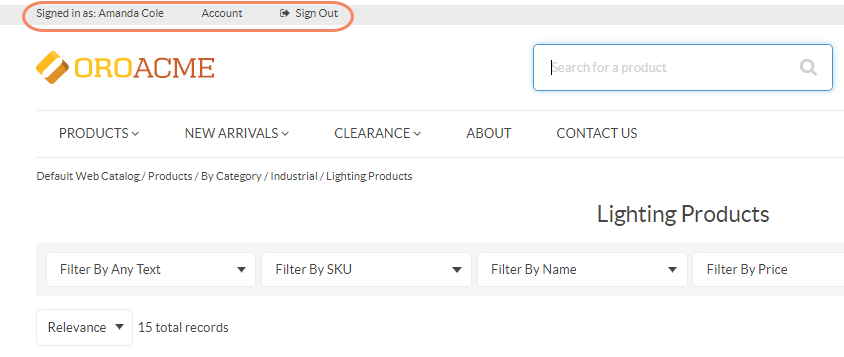
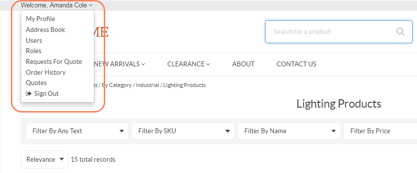

Configure Theme Globally¶
You can set the following theme-related options that apply globally by default:
- Pre-designed theme for the storefront
- The layout for the product page details (default tabbed view, short, two column, or list)
- Style of the selector in filters
- Display mode for the user menu on the storefront
To configure the storefront theme options globally:
- Navigate to System > Configuration in the main menu.
- Select Commerce > Design > Theme in the menu to the left.
Note
For faster navigation between the configuration menu sections, use Quick Search.
The following page opens:
In the Theme Settings section, select the theme from the list. The theme controls general design of the storefront that defines its look and feel. Default, blank, and custom themes are available out of the box for the storefront.
For example, this is how the address book looks in the storefront when for the default and custom themes:
Default theme

Custom theme
In the Page Templates section, select the product page template from the list.
This page template is used to render the product page in the storefront by default, unless the template is overridden in the product details.
Default template (tabbed), Short page, Two-column page, and List page templates are available out of the box. For preview and more information on these options, see the Manage Product Page Design with Page Templates topic.
Select the Use Parent Scope Value check box to use the default value.
In the Filter Settings section, specify how the multi-select filters should look in the storefront. Available options are Drop-down and All at once.
For example, this is how the user menu looks for different values:
Drop-down
All at once
In the Menu Templates section, select the user menu display mode that defines the look and feel of the user menu in the storefront.
For example, this is how the user menu looks for different values:
Show all items at once
Show subitems in a popup
Click Save Settings.